Görseller tasarım referansıdır. Ölçüler hedef sayılarıdır; raster oranları yaklaşık, gerçek mesh/Unity fit doğrulanmadı. Tripo'ya geçilmedi. Git/Jira gönderimi bu taslak için yapılmadı.
Korunan merchant mark / reuse
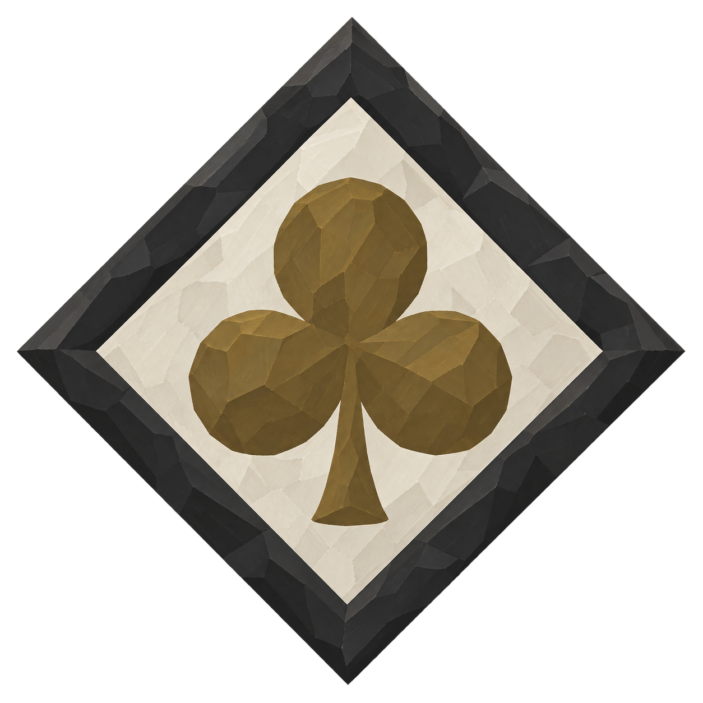
336ilk onaylı mark byte-for-byte korunur; heraldry yok.Cabinet_01 + SealedChest reuse; yeni dolap yok. PortraitframeStudy0.9×1.2; GreatHallFounder aynı master×2=1.8×2.4m. Founderplaque1×0.6, blank/fullcut/halfcut aynı materiel aile. Childshoe0.15m. Studywindowkit11balustrade1.1m.
Tekil45° referanslar
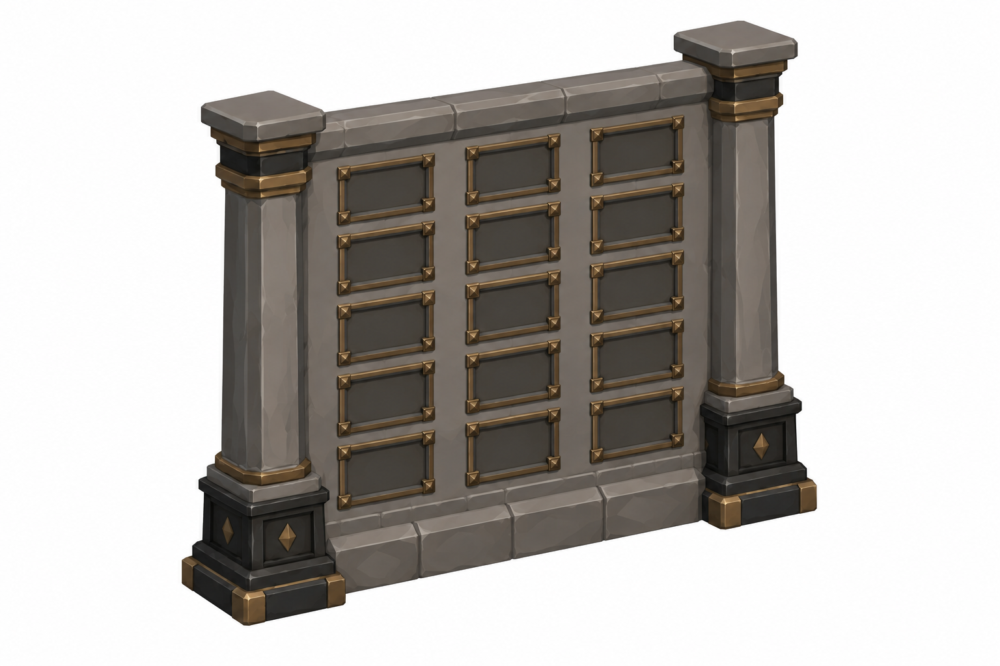
DonorPanel · 2.3 ×0.2 ×3m;3panels6.9mStyle/semantic review completed; exact proportions and mesh fit remain unverified. DonorPlaque · 0.5 ×0.05 ×0.3mStyle/semantic review completed; exact proportions and mesh fit remain unverified.
DonorPlaque · 0.5 ×0.05 ×0.3mStyle/semantic review completed; exact proportions and mesh fit remain unverified.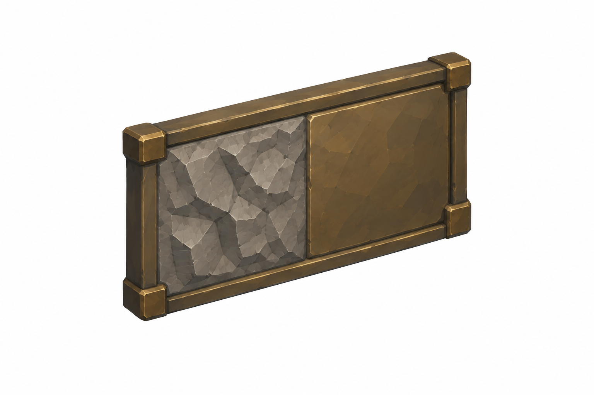
HalfPlaque · 0.5 ×0.05 ×0.3m; halfcutStyle/semantic review completed; exact proportions and mesh fit remain unverified.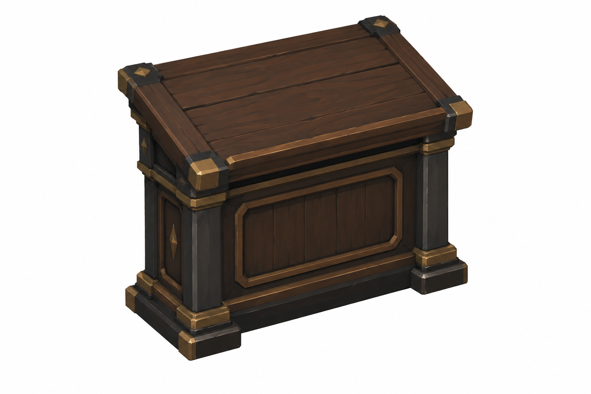
LedgerDesk · 1.2 ×0.7 ×1.1mStyle/semantic review completed; exact proportions and mesh fit remain unverified.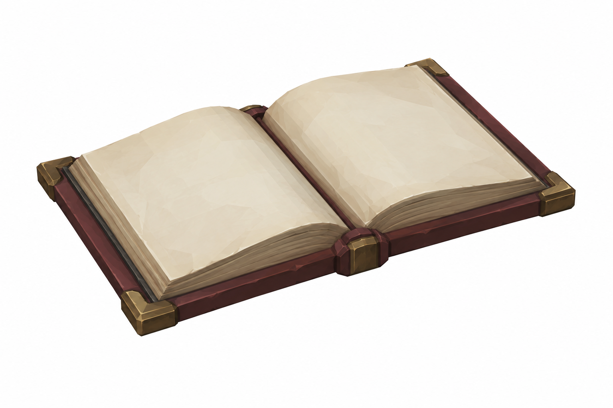
GreatLedger · 0.6 ×0.45 ×0.1mStyle/semantic review completed; exact proportions and mesh fit remain unverified.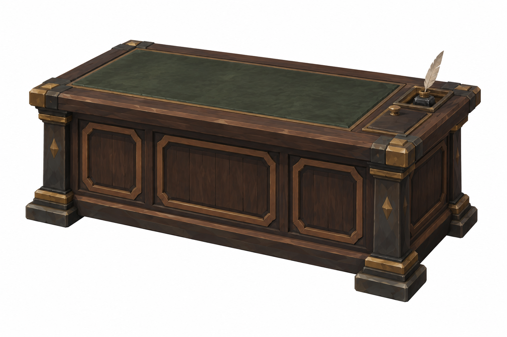
BenefactorDesk · 1.8 ×0.9 ×0.8mStyle/semantic review completed; exact proportions and mesh fit remain unverified.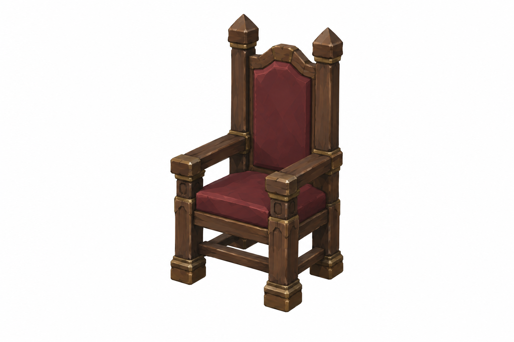
HighChair · 0.7 ×0.7 ×1.4m;seat0.45Style/semantic review completed; exact proportions and mesh fit remain unverified.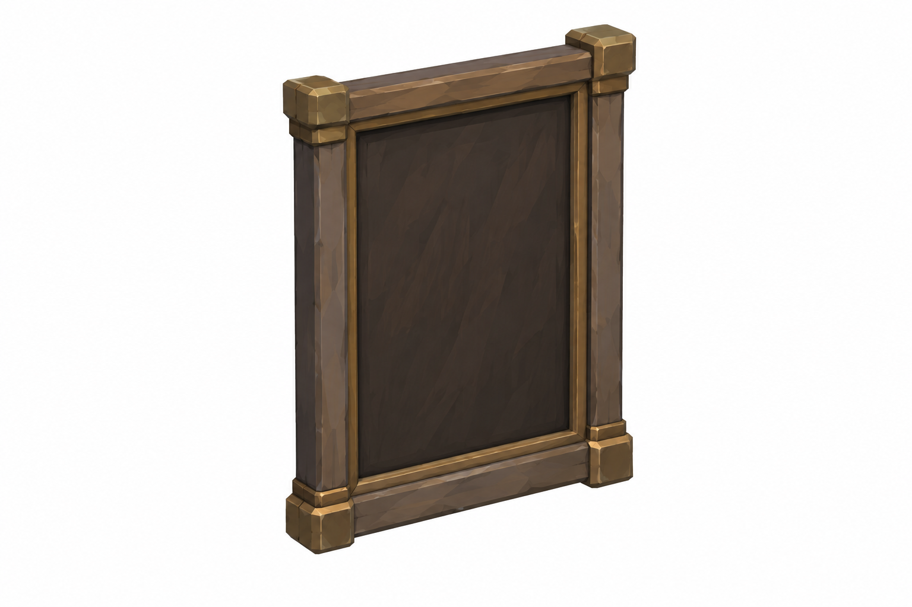
PortraitFrame · Study0.9 ×0.08 ×1.2; Founder×2Style/semantic review completed; exact proportions and mesh fit remain unverified.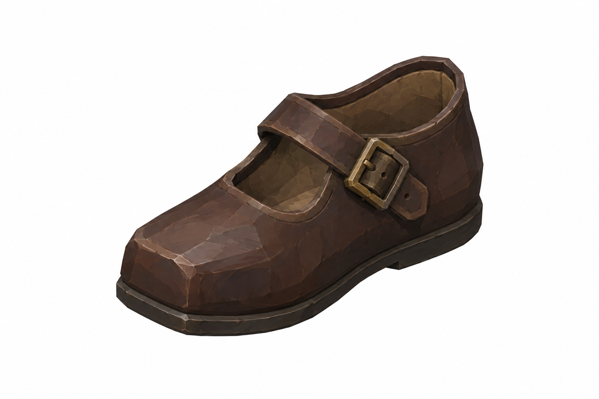
ChildShoe · L≈0.15mStyle/semantic review completed; exact proportions and mesh fit remain unverified.Üç panel yerleşimi
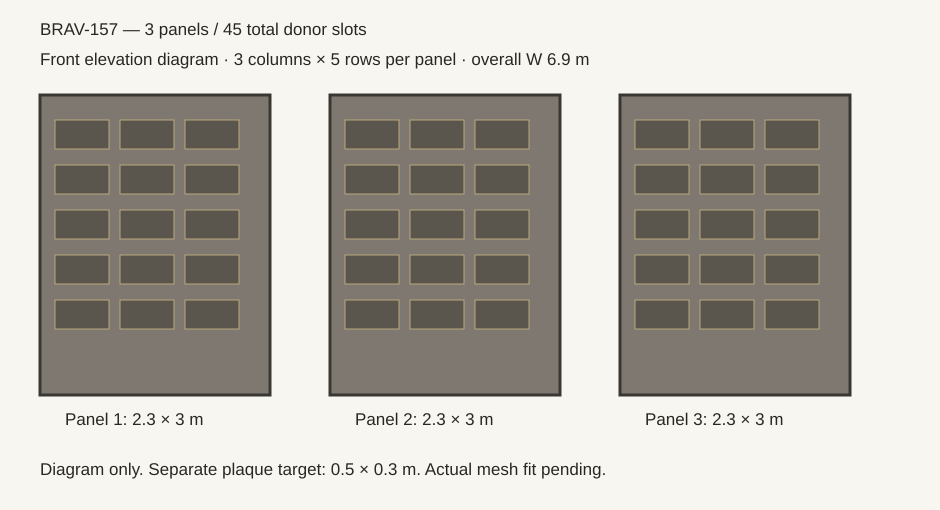
Founder plaque · ortak geometri ölçek varyantı
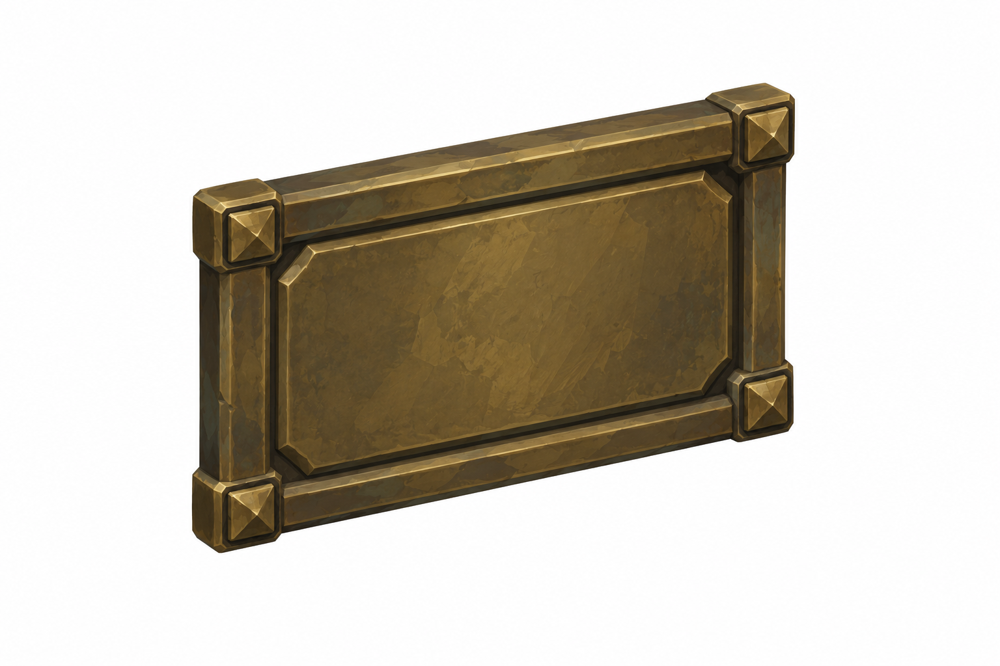
1.0 ×0.6 m top-centre · DonorPlaque geometri ×2; aynı referans byte-for-byte korunur. Ayrı yeni model tasarımı yok; actual mesh fit pending.